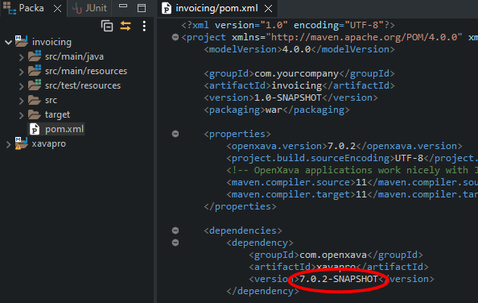

Modify XavaPro code
Enterprise and Corporate editions of XavaPro include the complete source code, so you can modify the XavaPro code to adapt it to your needs, fix a bug, add a new feature, etc.
Install a JDK 8
XavaPro is compiled with Java 8 in order to work with Java 8, 11 and 17. You have to install Java 8 in your computer and configure OpenXava Studio to recognize it.
Import xavapro into workspace
To import the xavapro project click on File > Import...:
Now select General > Existing Projects into Workspace and click on Next:
In Select root directory browse to choose the folder where the XavaPro code is, that is, xavapro-7.x.x/source-code:

Make sure that xavapro project is checked, then click on Finish.
Finally the xavapro project with all its code is in your workspace:
Now you can modify the xavapro code at your taste.
Modify XavaPro code
First, change the version in xavapro/pom.xml to be a SNAPSHOT. Open the pom.xml inside the xavapro project and add the -SNAPSHOT suffix to the version number:

It means that it is a working version, not with fixed features but ready to be modified.
Now, it's time to modify the code. For example, edit the ProSignInHelperProvider.java code and add a extra condition in the isAuthorized() method, like this:

Then make a mvn install on xavapro, in this way:

This time it's not needed to do a mvn clean because it's the first time and target is empty, but if you get the code of a new XavaPro version you should do a mvn clean too.
Now, go to your project, edit the pom.xml and put the openxava.version property to the value of the XavaPro SNAPSHOT version you have in your workspace:
This is important, otherwise your project will not use the xavapro you have modified, but the official version from your Maven repository.
Then do a mvn clean on your project:

And then a mvn install on your project:

Congratulations! Your project is ready to run with your modified XavaPro. Try it.
Shorten modification cycle
The above steps are for the very first modification. From now on, the next modifications can be easy, just three steps:
- Modify xavapro code.
- Do a mvn install on xavapro.
- Do a mvn war:exploded in your project. For this you can use Run As > Build Maven ...
Even more, you can start your application in debug mode, clicking on the bug:

In this way you can modify the code in xavapro and see the result instantly, even without relaunching your application or reloading the browser. Just like magic.